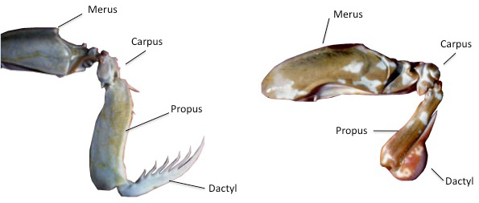
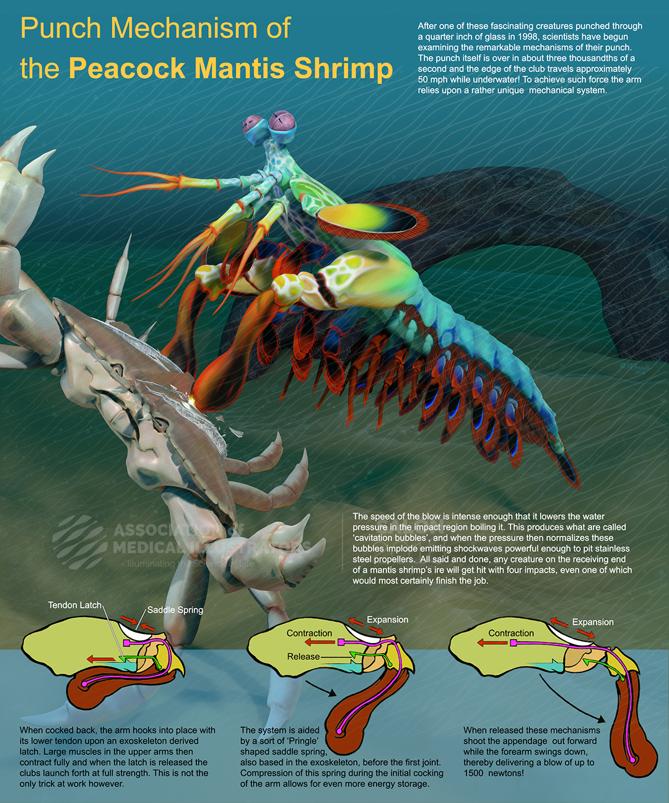
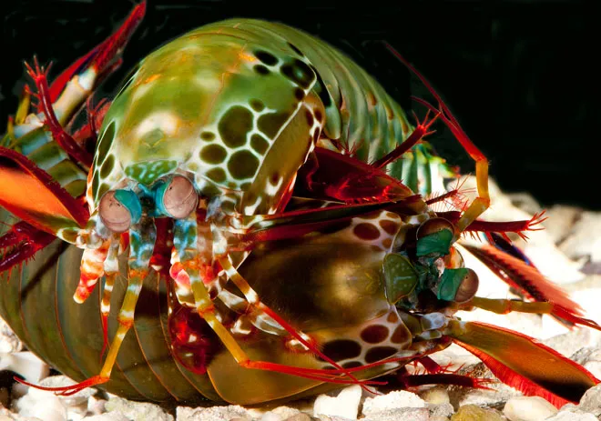

Fatos sobre o Stomatopoda.
Informações gerais.

Visão
Uma criatura visionária!
Esses animais possuem o mais complexo sistema de visão de cores do mundo animal, pois enxergam 12 cores primárias, correspondentes aos 12 pigmentos distintos presentes em sua retina. O sistema de visão dos estomatópodes possui doze cones sensíveis à luz e outros quatro que filtram a luz (16 cones no total), o que lhes permite ver cores polarizadas e imagens multiespectrais. Capaz de interpretar polarização no espectro ultravioleta e infravermelho)

Tipos
Perfurar ou esmagar, eis a questão
De acordo com a anatomia da sua pata raptorial é possível distinguir entre dois grupos funcionais, os perfuradores (spearers) ou os esmagadores (smashers), sendo que cada um dos tipos apresenta sua própria variação comportamental e até mesmo de habitat. Os esmagadores têm garras únicas em forma de clava que eles usam para espancar ou “socar” suas presas. Eles usam suas garras como martelos e quebram as conchas de suas presas com imensa força contundente. Os perfuradores, por outro lado, têm garras semelhantes a lanças que inspiram seus nomes. Suas garras são afiadas e farpadas, e eles os usam para esfaquear, cortar e prender suas presas.
Golpes
Veloz e furioso
Também conhecidas como esquilas ou lagosta-boxeadora As maiores esmagadoras, tais como exemplares de Odontodactylus scyllarus, são capazes de desferir um dos mais rápidos e violentos golpes do reino animal, um soco que pode apresentar a velocidade de um tiro calibre .22 (equivalente a 720 km/h) e uma pressão de impacto de 600 N/cm². Essa força esmagadora é a responsável pelo seu título de "lagosta-boxeadora" e é capaz de facilmente quebrar a carapaça de um caranguejo, as conchas duras e calcificadas de gastrópodes ou até mesmo quebrar o vidro reforçado de um aquário.
Comportamento
Inteligente e com boa memória
Os stomatopoda são altamente inteligentes. Eles reconhecem e se lembram de outros indivíduos pela visão e pelo olfato, e demonstrar capacidade de aprender. Os animais têm um comportamento social complexo, que inclui lutas ritualizadas e atividades coordenadas entre os membros de um par monogâmico. Eles usam padrões fluorescentes para sinalizar uns aos outros e possivelmente outras espécies.
